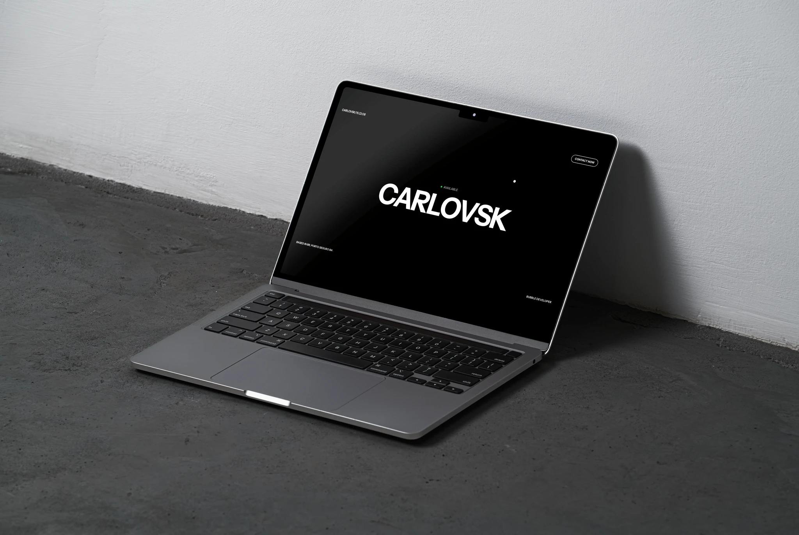
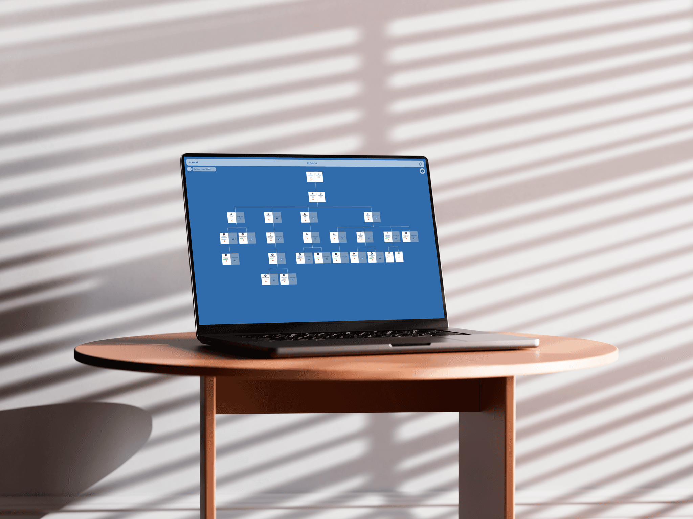

I turn ideas into shipped products.
Software engineer in Brazil. Code is the cheap part now. Deciding what to build, and refusing the states it must never reach, is the job.
Calçadão de Copacabana, Burle Marx, 1970. Drawn in code, not imported.
Selected work
Seven years shipping · no-code roots, high-code today
R.E. Cost Seg
Cost-segregation SaaS for real-estate investors, rebuilt from Bubble into real code. Self-checkout with Stripe, client intake, and an in-app workflow engine that replaced the no-code automations behind it.

arOS
Multi-agent marketing OS. I built the agent core that plans, writes and ships campaigns.
FixaAí
Founded it. AI flashcards with a spaced-repetition engine, shipped with OpenAI in 2024.
Hello Maia
Non-technical teams build their own AI assistants, then watch and override them live.

Eu Na Europa
A decade-long citizenship process as one portal: live family tree, documents, caseworkers, payments.
How I got here
Salvador → Brasília → wherever the work is
Most developers learn to code in a classroom. I learned by shipping things people paid for.
At 15 I opened the Shopify editor to fix one thing on my dropshipping store and didn't close it for years. Something always felt off: the checkout, the layout, the way a product page either pulled you toward buy or lost you. That's how I learned to code, chasing an experience that wasn't good enough yet.
Then three stores, R$150K a year, and every month landing back at break-even. Then a product I founded to a thousand users. Then Bubble, professionally, for two years, because it got ideas live in days instead of months.
Today it's Next.js, React, TypeScript and Supabase, and the lesson never changed: I never fell in love with code. I fell in love with the experience, and code is just how I shape it.
Experience
Full history on LinkedIn